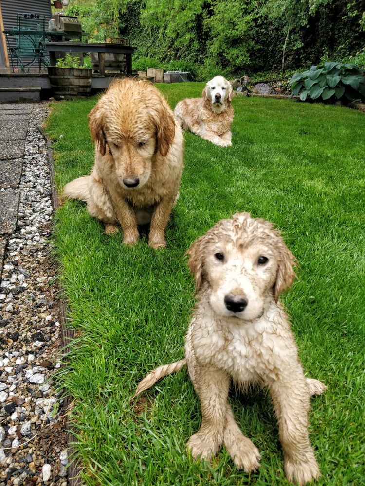

Missão
Resgatar cães em situação de abandono, cuidar da saúde deles e encontrar famílias preparadas para recebê-los.
Quem somos
A Patas de Casa resgata, cuida e encontra famílias para cães abandonados em Sorocaba e região.

Nossa história
A Patas de Casa nasceu há seis anos, quando um pequeno grupo de voluntários começou a recolher cães abandonados nas ruas de Sorocaba e a procurar um lar para cada um deles.
No começo, os cães ficavam na casa dos próprios voluntários. Com o tempo, criamos uma rede de lares temporários, parcerias com veterinários e um processo de adoção que acompanha a família antes e depois da chegada do cão.
Hoje já foram 128 cães adotados. Cada adoção nos lembra o motivo pelo qual começamos: nenhum cão deveria ficar sem um lar.
O que nos move
Resgatar cães em situação de abandono, cuidar da saúde deles e encontrar famílias preparadas para recebê-los.
Ser referência em adoção responsável em Sorocaba e região, com cada vez menos cães nas ruas.
Como trabalhamos
Recolhemos o cão e avaliamos como ele está.
Vacinas, castração, microchip e tratamento veterinário.
Ele vive em família até aprender a confiar de novo.
Conversa, visita e termo de adoção acompanhados pela equipe.
Equipe do projeto
Projeto acadêmico de Web Design, feito em grupo com HTML, CSS e JavaScript.
Desenvolvimento do site
Desenvolvimento do site
Desenvolvimento do site
Faça parte
Fale com a nossa equipe. Atendimento de segunda a sábado, das 9h às 18h.